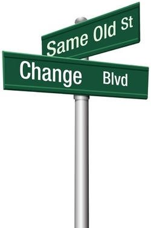

- Do you feel like you are missing something or need a change in your life?
- Do you desire better relationships and the ability to communicate better?
- Do you feel like you don't have enough hands and feet to do all that you need to do? Do you need balance or structure in your life?
- Do you feel like you desire more from life – in all its aspects and want to live more authentically and purposefully?
- Do you feel stuck in a situation and having trouble seeing the way out?
- Do you have a longing to broaden your vision, increase your confidence, enhance your skills and take achievable steps toward your goals?
- Do you desire a career change in your future?
- Do you feel like you're in transition and want to know what the next step is?
- Do you want someone to encourage you and hold you accountable?
- Do you feel you're stuck in the weeds of unproductiveness?
- Do you have a desire to experience God in a transforming way and find out what you were created to do?